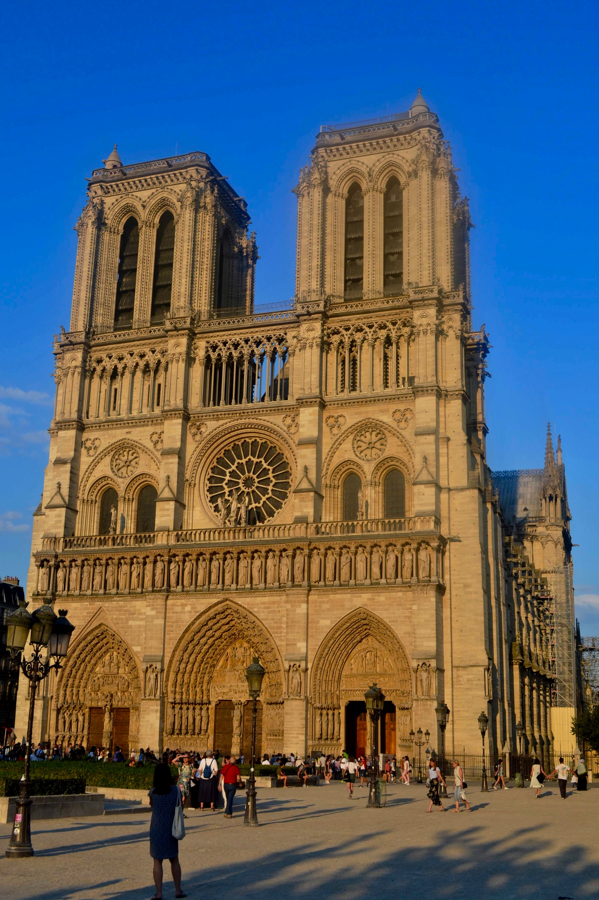
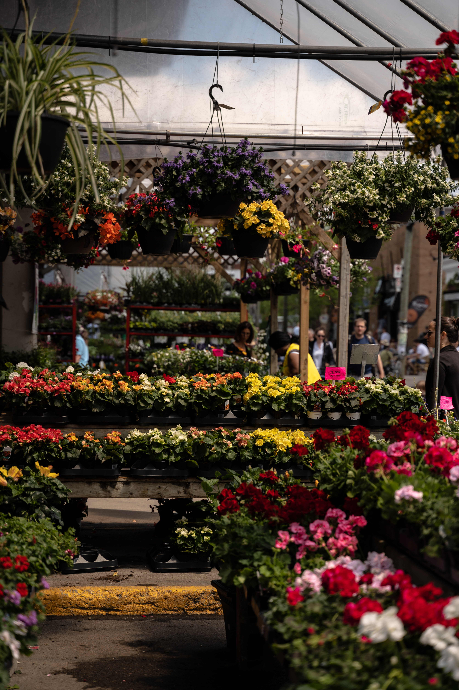

Quartier
Visite du quartier
Visitez la cathéral de Monatre du sacré-coeur Monatre cathéral du sacré-coeur
La ville du 18ème arrondissement et un quartier dynamique avec sa cathédral magnifique de Montatre qui surplombe Paris.
on peut admirer ces musés et ces magasins!

La cathédral du Sacré-Coeur de Monatre

Les ballades du 18ème